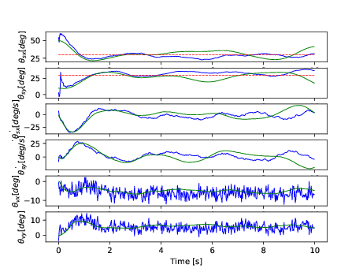
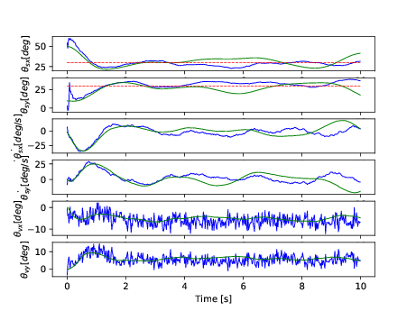

Self Introduction
東京大学大学院工学系研究科
航空宇宙工学専攻 知能工学研究室修士1年
荒居 秀尚
自己紹介
- 名前: 荒居 秀尚(Arai Hidehisa)
- 所属: 東京大学大学院工学系研究科
- 専門: 制御工学
- あだ名: こうきょ
- 趣味: モノ作り、散歩、読書
- 特技: アクロバット
プログラミングを始めたきっかけ
学部3年の時、学科の授業でPythonを習う
学科での主な用途は数値計算
 

Kaggle Mercariコンペ
- 5人チームで挑戦
- 最終順位は182位で銅メダル
- Pythonで前処理と木ベースの手法を担当
部活の出欠管理システム
- 所属していた部活の出欠管理を行うシステム
- Ruby(RoR)とJavaScript(jQuery)で開発
- 厳密にはまだ終わっていないので「今」に入る
Google Homeでルンバを操作する出し物
- 今年の五月祭向けに研究室で制作
- PMだったので作ってはいないがタスク管理のSlack Botなど作成
- Slack BotはGoogle Apps Scriptで作成
「Web工学」という授業の課題
- 画像生成とレコメンドを組み合わせたサービス
- 6人チームで開発
- PMとフロントエンド、データ・セット作成を担当
本郷テックガレージ
- ドローンの着陸用インフラを作るチームに参加
- ドローンの制御ソフトウェア開発を担当
研究会の文字おこし
- 自動で文字起こし・人の区別も
- 音声→文字はGoogleのサービスの利用を検討
- 人の区別はMFCC・HMM・DNNなどを試す
色々なことができる人間でありたい
- ソフトもハードも触れる人間でありたい
- 理論も応用もわかる人間でいたい